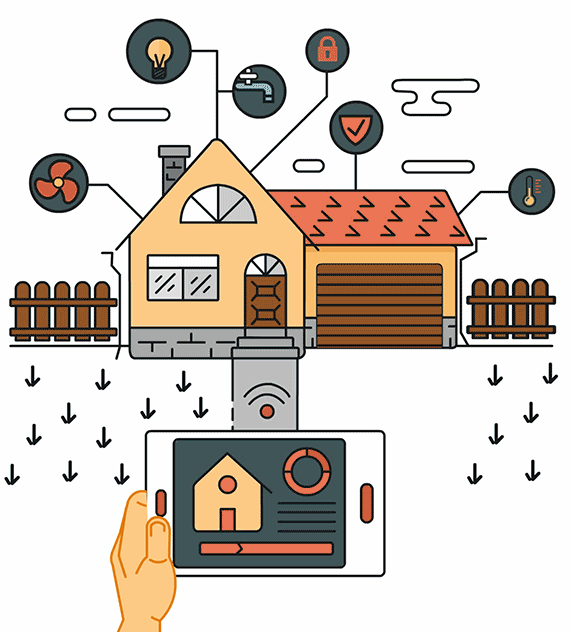

Hasta ahora hemos aprendido a manejar multitud de componentes. Ahora vamos a realizar una práctica que incluya estos últimos junto con alguno de los anteriores.

(1) x Placa Arduino
(1) x Protoboard
(-) x LEDs De 5mm
(-) x LEDs RGB
(1) x Registro De Turnos 74HC595
(1) x Módulo Control Remoto IR
(1) x Mando A Distancia
(1) x Módulo De Humedad Y Temperatura DHT11
(1) x Zumbador Activo O Pasivo
(1) x Transistor
(1) x Joystick Analógico
(1) x Servomotor
(-) x Resistencias
(-) x M M cables (cables de puente de macho a macho)
Además se podrá utilizar cualquier otro componente visto ya anteriormente.
El objetivo de esta práctica es la de domotizar una casa.
La casa constará de 3 habitaciones en las que la luz se encenderá automáticamente cuando el nivel de luz
exterior sea bajo.
Con el mando a distancia podremos seleccionar el color de al menos la luz de una de las habitaciones de
entre los colores rojo, azul, verde o blanco.
Mantendremos la temperatura por encima de 22º y por debajo de 26º. Para ello, si baja de 22º o sube de 26º,
haremos saltar una alarma.
Controlaremos también si la humedad del ambiente y si sube por encima del 50% cerraremos eléctricamente
todos los circuitos eléctricos para eliminar el riesgo de cortocircuito.
Por último, tendremos el control de la cámara de seguridad instalada en la entrada, la cual podremos manejar
su orientación con un joystick.